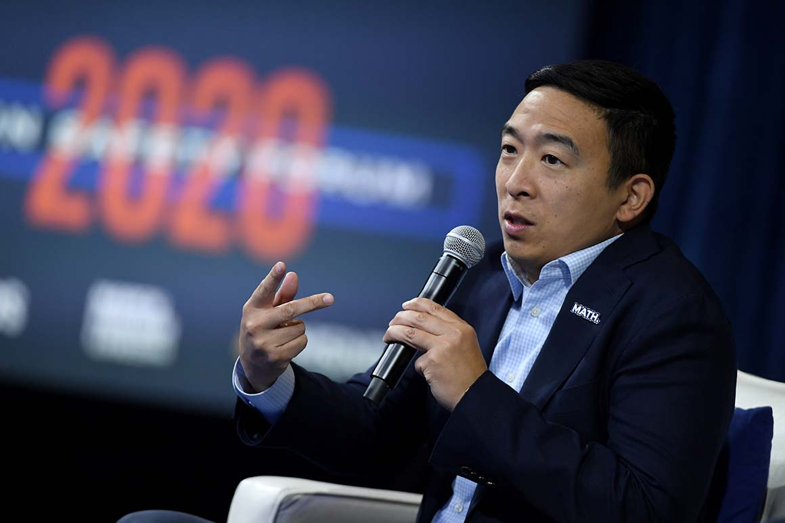
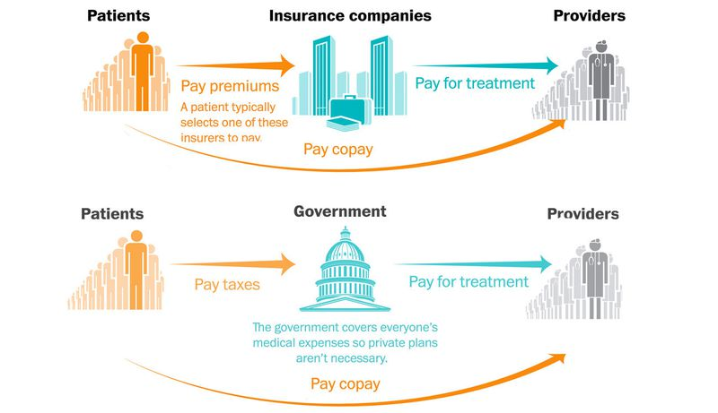
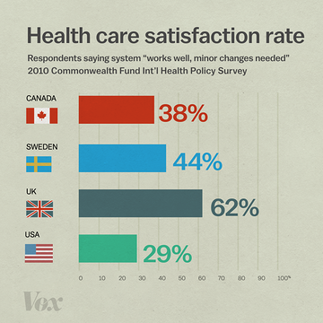
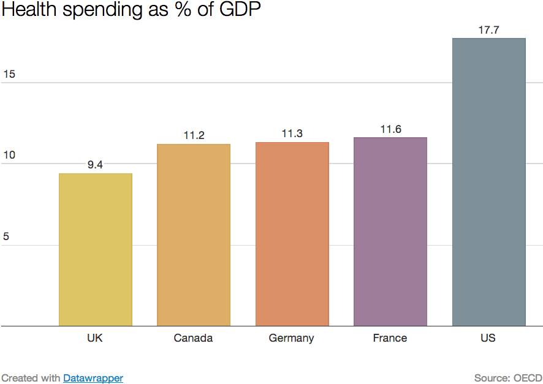
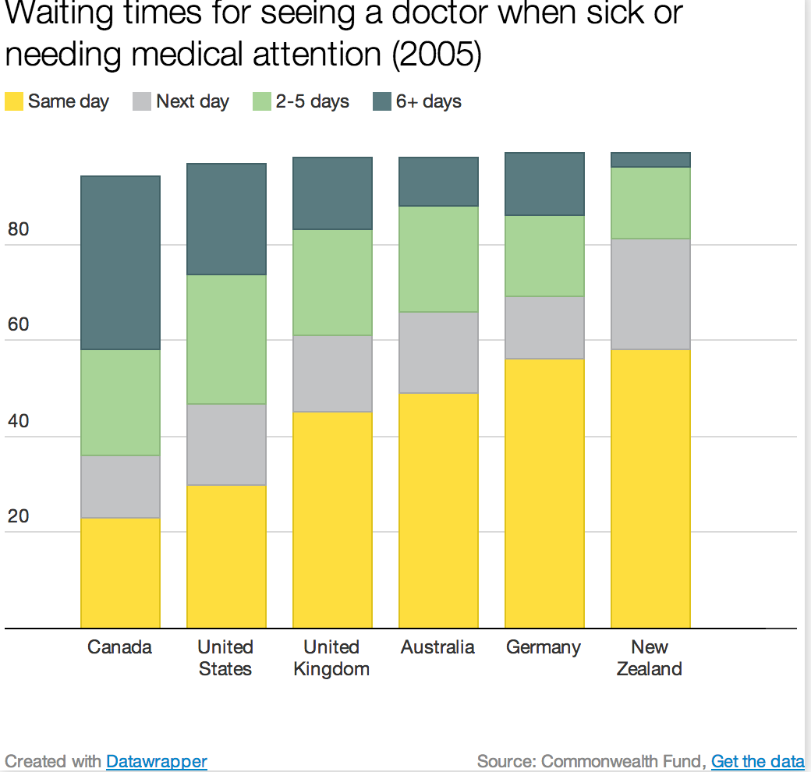

앤드루 양(Andrew Yang)이 원하는 '단일보험자 체계'란 무엇인가?
게시: 2019-10-31T06:30:20+09:00
최근에 아래와 같은 기고문을 Medium이라는 매체에서 읽었습니다. 기고한 사람은 대단한 학자처럼 영향력 있는 분은 아닌 것 같습니다. 그래도 읽어보니 이미 앤드루 양이 지향하는 단일보험자 체계를 시행하고 있는 우리나라 사람들도 알아두면 좋을 것 같은 내용이 있어서 일부를 발췌 번역했습니다.
이 글을 제대로 읽으시려면 지난 주에 올렸던 미드 '닥터 하우스'의 한 에피소드에 대한 제 블로그 포스팅을 미리 읽어보시는 것이 좋습니다.
------------------------------------------ Andrew Yang wants Medicare for All. Here’s how it gets paid for. https://medium.com/@queenofhaiku/andrew-yang-wants-medicare-for-all-heres-how-it-gets-paid-for-4b149b497c7f

앤드루 양(Andrew Yang)은 2020 대통령 선거에서 민주당 예비 후보로 경합 중입니다. 이 사업가 출신의 정치 후보자는 보편적 기본 소득(Universal Basic Income)과 전국민 건강보험(Medicare for All)에 대해 매우 뛰어난 아이디어를 가지고 있습니다. 이 미디엄(Medium) 포스팅에서는 그가 주장하는 전국민 건강보험에 대해서 다뤄보겠습니다. 그가 주장하는 전국민 건강보험은 다른 용어로 설명하자면 단일보험자체계(single-payer health care) 또는 보편적 건강보험체계(universal health care)라고 할 수도 있습니다. 보편적 건강보험체계는 이미 호주, 캐나다, 프랑스, 독일, 싱가폴, 스위스, 영국 등에서 잘 운용되고 있습니다. 이 전국민 건강보험에 대해 잘 모르는 분들이 공통적으로 올리는 질문은 이겁니다. "누가 그 비용을 대는가?" 그에 대한 답은 앤드루 양의 웹사이트에 잘 나와있습니다. (역주: 아래 내용에 저 개인적으로 100% 동의하지는 않습니다) "...단일보험자 체계로 전환하면 의료 서비스에 대한 가격을 설정함으로써 비용을 직접적으로 통제할 수 있습니다. 가장 좋은 접근방식은 최고 수준의 병원인 클리블랜드 클리닉(Cleveland Clinic)의 사례를 보는 것입니다. 이 병원에서는 의사들이 '서비스 제공에 따라 돈을 받는 것'이 아닌, 단순 급여를 받습니다. 이 전환으로 인해 병원에서는 비용을 쉽게 파악할 수 있고 통제할 수 있게 되었습니다. 중복적인 테스트는 최소화되었고 비슷한 규모의 다른 병원에 비해 의사들의 전직률도 매우 낮습니다. 또한 이 변화 이후 의사들은 환자들과 더 많이 상대한다고 합니다. 단순 급여를 받기 때문에 환자 회전율을 무리하게 높일 필요가 없기 때문입니다. 대신 각 환자가 정당한 관심과 공감을 받을 수 있도록 적절한 시간을 사용합니다..." 클리블랜드 클리닉에서는 내과 및 외과 의사들이 얼마 정도의 급여를 받을까요 ? 웹사이트 Indeed.com에 그 답이 있습니다. 부문별 평균 급여 목록이 공개되어 있습니다. (역주: 아마 이 정도 받으면 충분히 받는 것이라는 뜻으로 적은 것 같습니다) 마취과 — $301,747 입원 내과 (Hospitalist - 역주: 이게 뭔지 잘 모르겠군요) — $196,024 신생아과 — $205,000 신경과 — $251,736 내과의사 — $101,818 정신과 — $170,140 외과 — $219,227 응급내과 — $307,872 클리블랜드 클리닉의 급여 기반 비교 모델에 대한 더 많은 정보가 있습니다. 급여 기반 체계로 이전하는 것에 따른 장점에는 다음과 같은 것들도 있습니다. - 더 쉬운 행정관리 - 더 쉽게 파악되는 체계 - 환급 체계에 대한 독립성 - 정당한 환경(병가, 공사, 시스템 등)인 경우 실적 변동을 허용 - 팀 정신 고양 의료비 환급(healthcare reimbursement)이란 무엇일까요 ? 의료비 환급은 여러분이 받은 의료 서비스에 대해 병원과 의사, 진단기관 또는 다른 의료 서비스 기관들이 어떻게 돈을 받느냐에 대한 이야기입니다. 의료 서비스 제공자는 보험사 또는 정부로부터 환급 체계를 통해 돈을 받습니다. 여러분이 의료 서비스를 받은 뒤에, 의료 기관은 그 비용에 대해 (그게 누구든) 지불 책임이 있는 기관에게 청구서를 보냅니다. 비용은 받은 의료 서비스에 따라 청구되며, 메디케어 혹은 여러분 개인의 보험사가 특정 서비스에 대해 맺은 계약에 따라 정해집니다. 여러분에게 만약 (여러분의 고용주 또는 '오바마케어' 장터가 제공한) 민영 건강보험이 있다면, 여러분이 이용한 의료기관은 그 건강보험으로부터 돈을 받습니다. 하지만 이 시스템에는 몇가지 큰 문제가 있습니다. 그 중 하나는 사전 승인입니다. 건강보험사는 의사나 병원이 환자에게 치료나 처방을 하기 전에 보험사에게 그에 대한 허락을 받도록 요구할 수도 있습니다. 보험사 입장에서는 그런 치료에 대한 승인 또는 거부 결정을 서두를 필요가 없습니다. 이로 인해 환자와 의사 모두 좌절감을 느끼게 됩니다. 또 다른 문제는 건강보험사들이 환자가 필요로 하는 치료 비용을 다 책임져주지는 않는다는 것입니다. 보험사는 어떤 특정 치료 또는 의약품의 일부만 부담해주고 나머지 대부분은 환자 본인 부담으로 떠넘길 수도 있습니다. 이미 건강보험사에 보험료(premium)를 내고 거기에 본인 부담금(co-pay)까지 내는 보험가입자들에게 이는 정말 좌절스러운 일입니다. 또한 필요로 하는 치료 및 약값을 마련하기 위해 돈을 구하는 것은 정말 어려운 일이기도 하고요. (역주 : 지난주 포스팅에 올렸던 미드 '닥터 하우스'의 일화 중 엄지손가락이 절단된 목수에 대한 손가락 봉합 수술 여부를 참조하시면 이해가 쉬우실 겁니다. 그 드라마 속에서 목수가 가입한 보험사에서는 손가락 봉합 수술 비용은 환급해주지 않습니다. 그러나 닥터 체이스는 '엄지손가락 없는 목수가 앞으로 어떻게 살아간단 말인가'라는 생각에 임의로 봉합 수술을 해버리지요. 그 덕분에 손가락과 함께 자신의 직업을 유지하게 된 목수는 어쩔 수 없이 배은망덕하게도 은인인 병원에게 부당 치료비 거부 소송을 제기해야 했습니다.)

(위는 미국의 현재 다중보험자 체계, 아래는 많은 이들이 도입을 주장하는 단일보험자 체계입니다. 우리나라는 이미 단일보험자 체계를 도입했습니다. 그림 출처는 https://www.chicagotribune.com/business/ct-biz-how-single-payer-health-care-works-20171018-story.html )
캘리포니아를 포함한 몇몇 주들은 환자가 치료를 받았던 병원의 의사 한두 명이 그 범위를 벗어나는 치료를 했기 때문에 발생하는 그런 '깜짝 병원비'로부터 주민들을 보호해주는 법률을 가지고 있습니다. 다른 주들은 그런 보호 법률이 없습니다. 아무도 건강보험사가 병원비를 해결해줄 거라고 믿고 있다가 뒤통수를 얻어맞는 것을 좋아하지는 않습니다. (중략) 하지만 메디케어는 다릅니다. 메디케어는 미국 재무부의 2개 신탁펀드에 의해 재원이 마련됩니다. 이 펀드들은 오로지 메디케어를 위해서만 사용됩니다. 이 펀드들의 재원은 대부분의 임금 근로자들과 고용주들과 자영업자들이 내는 원천소득세(payroll taxes)로 지탱됩니다. (중략) 다른 말로 표현하자면, 미국에는 앤드루 양의 건강보험 계획과 비슷한 체계가 이미 있는 것입니다. 차이가 나는 점은 앤드루 양의 계획은 메디케어의 혜택을 입을 자격이 되는 제한된 그룹의 사람들 뿐만 아니라 모든 국민들을 다 포함한다는 것입니다. 그 비용 부담도 메디케어가 이미 실행하고 있는 것과 동일하게 원천소득세로 처리됩니다. 분명히 해두자면, 이는 새로운 세금이 아닙니다. 이건 미국 근로자들과 고용주들이 이미 수십년간 정기적으로 내고 있던 세금입니다. (역주: 다만 세율은 조금 더 높아질 것 같습니다. 물론 고소득자에게 조금 더 많이 높아지겠지요.) CNBC는 캐나다가 단일보험자 체계를 성공적으로 구현했다고 보도했습니다. 그럼에도 불구하고 캐나다 국민들은 미국인들과 대략 비슷한 액수의 세금만 냈습니다. 영연방 기금(Commonwealth Fund)에서 2017년 수행한 연구 조사에 따르면 캐나다 체계는 전체 11개 국 중에서 9위에 랭크되었습니다. 미국은 그 조사에서 꼴찌를 했습니다.
2017년 나온 매사추세츠 암허스트(Massachusetts Amherst) 대학의 경제학 교수인 제랄드 프리드먼(Gerald Friedman)의 기고문 “‘Medicare for all’ could be cheaper than you think” (국민 모두의 메디케어는 생각보다 비싸지 않다)에 다음과 같은 구절이 있습니다. "...내 추산으로는 단일보험자 체계를 도입하면 현재 지불되는 의료비, 즉 2017년 기준 약 6650억 달러를 거의 18% 정도 절감할 수 있다. 이는 이다. 단순히 메디케어를 확장하는 것만으로는 그만큼 절감이 되지는 않겠지만 그래도 꽤 상당한 절감이 될 것이다. 그러면 그런 비용 절감은 대체 어디서 오는가 ? 우선, 미국 내의 의료비는 세계 어느 나라보다도 더 비싸다는 것이 여러 연구의 결과이다. 미국의 건강보험 체계는 예를 들어 캐나다보다 지출이 2배나 많은데 이는 보험사(“payers”)가 더 많아서 체계가 더 복잡하기 때문이다. 단순한 메디케어 확장으로 인한 비용 절감만 해도 이런 낭비되는 비용을 연간 890억 달러 정도에 달할 것이다. 또다른 비용 절감 효과는 보험 행정에서 온다. 민영 보험사들은 전체 비용 중 약 12% 이상을 오버헤드에 지출하는데, 메디케어에서는 그 지출이 2%에 불과하다. 전국민을 메디케어로 전환시키는데서 오는 비용 절감도 750억 달러에 근접할 것인데, 이는 더 큰 규모의 경제, 메디케어 경영진의 더 낮은 급여, 훨씬 더 적은 마케팅 비용 등으로 인한 것이다. (역주: 보험사에서는 펄쩍 뛸 이야기이긴 합니다. 비용 절감이 금융계의 대량 실직에서 온다는 이야기니까요. 다만 마케팅 비용 절감에 대해서는 딱히 뭐라고 반박하기가 어렵겠군요.) 세번째로, 단순한 메디케어 확장만으로도 비용 절감이 되는 것은 독점적인 지위의 병원들이 민간 보험사에게 과다하게 의료비를 책정하는 것을 줄일 수 있기 때문이다. 그런 민간 보험사와 비교할 때, 메디케어는 똑같은 치료에 대해서도 22% 더 적은 비용을 지불하는데, 이는 그 규모의 경제 떄문이다. 만약 모든 미국 국민이 메디케어를 사용한다면 의료비 절감은 530억 달러 이상 될 것이다. (역주: 이 부분이야말로 지난주에 올렸던 미드 '닥터 하우스'에서 병원장 커디가 보험사를 상대로 벼랑끝 협상을 벌이는 장면을 생각하시면 쉽게 이해 되실 것입니다.) 위의 세가지 분야에서의 절감은 2200억 달러 조금 밑도는데, 그로 인해 의료비를 6180억으로 떨어뜨릴 수 있다..." 요약하면, 앤드루 양의 전국민의 메디케어 계획은 실현될 수 있는 것입니다. 그 비용은 우리가 현재 메디케어 비용을 내는 것과 동일한 방식으로 충당될 수 있습니다. 모든 미국인들이 전국민의 메디케어 혜택을 받을 것입니다. 여기에는 젊고 건강해서 의료비가 별로 필요하지 않은 사람들의 가입으로 그 추가 비용을 상쇄하게 된다는 것을 뜻합니다. (역주: 젊고 건강한 사람들은 당장 불필요한 비용이 생길 수 있습니다. 그러나 모든 사람은 결국 늙고 병들게 되니까 나름 공평한 거라고 생각합니다. 젊고 건강한 사람은 일단 그런 강제 보험을 안 들었다가 나중에 늙었을 때 들면 안 되냐는 말씀을 하신다면... 그건 보험이라는 개념을 제대로 이해 못하신 거라고 밖에... 확실한 것은 이런 전국민 건강보험은 고소득층에게는 불리하고 저소득층에게는 유리하다는 것입니다. 건강보험을 복지로 보느냐 아니면 서비스로 보느냐에 따라서 찬반이 극명하게 엇갈릴 것입니다.) ---------------------- 위가 Medium에 실린 기사의 발췌 번역입니다. 정말 공감이 되는 부분도 있고 과장이라고 생각되는 부분도 있습니다. 제 오해일 수도 있습니다만, 의사분들은 대부분 이런 '단일보험자 체제'와 '당연지정제'를 싫어하는 것 같습니다. 가령 '청년의사'(http://www.docdocdoc.co.kr/news/articleView.html?idxno=75099) 라는 매체에 실린 기사는 다음과 같이 다보험자 체제가 더 좋은 것이라고 주장하고 있습니다. 로페즈 회장은 다보험자제도의 성공사례로 2006년 네덜란드 의료개혁을 들었다. 그는 “보험가입이 의무인 네덜란드 의료보험제도는 국민이 매년 보험사를 선택하고 보험사가 의료공급자를 통합해 의료리스크를 균등화하는 구조”라면서 “법안이 2006년 통과된 이후 강력한 민간보험사간 경쟁이 유도돼 의료비용이 7% 절감됐다”고 말했다. 또 “보험사들은 소비자를 끌기 위해 저가 보험상품을 출시했고, 보험가입자들도 법안 통과 첫해에만 18%가 보험사를 변경했다”며 다보험자제도 전환 후 달라진 네덜란드의 의료 환경을 설명했다. 또 의사신문(http://www.doctorstimes.com/news/articleView.html?idxno=208399)이라는 매체에서는 다음과 같은 주장을 보도하며 단일보험자 체계를 비난했습니다. 본 세션 토론자로 나선 신의철 가톨릭의대 예방의학교실 교수는 “우리나라는 소비자들의 의료기관에 대한 선택권은 매우 광범위한 반면 단일 보험자를 두고 있는 특성상 보험자와 의료이용 가격에 대한 소비자 선택권은 아예 존재하지 않는다”고 말했다. 이어 “이는 정부가 의료 소비자를 보호해야 한다는 가치관 때문인데 건강보험 태동 당시와 비교해 국민의 전반적인 학력수준이 월등히 높아지고 인터넷, 스마트폰 등을 통해 정보력까지 국민과 정부가 거의 대등해진 현 시대에는 적합하지 않아 소비자를 무시하는 것과 다름없다”고 지적했다. 그러나 쉽게 이해하시겠지만 저가 보험상품은 저가의 의료 서비스를 뜻합니다. 보험사는 절대 손해볼 일은 하지 않습니다. 현재 우리나라가 채택하고 있는 단일보험자 체제 + 당연지정제 환경에서는 이론적으로 부자나 가난뱅이나 똑같이 대형 일류 병원의 뛰어난 명의에게서 치료를 받을 수 있습니다. 그러나 건강보험이 민영화되고 다보험자 체제가 되면 당연히 당연지정제도 폐지될텐데, 그러면 부자들이 갈 수 있는 병원과 가난뱅이들이 가는 병원이 확연히 구분되게 될 것입니다. 그야말로 자본주의가 사람의 건강과 생명에도 도입되는 것이지요. 그것이 바람직한 일인지 피해야 하는 일인지에 대해서는 정답이 없습니다. 가치관의 문제니까요. 저 위에서 의사들의 주장처럼 단일보험자 체계의 단점도 분명히 있고 다중보험자 체계의 장점도 있습니다. 그래도 저는 저와 제 가족, 특히 제 아이에게는 단일보험자 체제 + 당연지정제가 훨씬 더 유리하다고 생각합니다. 돈이 있든 없든 제대로 된 치료를 받을 수 있는 권리는 전국민에 대한 균등한 교육 기회와 함께 반드시 지켜져야 하는 2가지 필수 복지라고 저는 믿습니다.
  
(과연 일부 의사들이 주장하는 것처럼 단일보험자 체계를 도입하면 의사 한번 만나려면 며칠을 기다려야 하는 식으로 의료 서비스의 질을 떨어뜨리게 될런지는 위 그래프들을 보시고 직접 판단하시기 바랍니다. 그래프 소스는 https://www.vox.com/2014/6/26/18080458/single-payer 입니다.)
Source : https://medium.com/@queenofhaiku/andrew-yang-wants-medicare-for-all-heres-how-it-gets-paid-for-4b149b497c7f https://en.wikipedia.org/wiki/Single-payer_healthcare https://en.wikipedia.org/wiki/Cleveland_Clinic